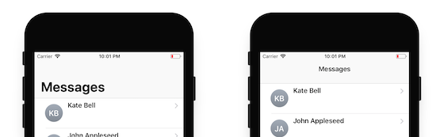

Sets the mode to be used when displaying the application bar title. Values
Scope Objects: Theme Description
iOS 11 adds the concept of large titles:  The purpose of large titles is to provide extra emphasis on context when needed. In some apps, the big, bold text of a large title can help orient people as they browse and search. In a tabbed layout, for example, large titles can help clarify the active tab and inform the user when they've scrolled to the top. Apple's Phone app uses this approach, while Music uses large titles to differentiate content areas like albums, artists, playlists, and radio. A large title transitions to a standard title as the user begins scrolling content. Large titles don't make sense in all apps and should never compete with content. Although the Clock app has a tabbed layout, large titles are unnecessary because each tab has a distinct, recognizable layout. Use Cases1. Use large titles in the root of navigation stacksThe most common use case for large titles applies to the first panel of a navigation stack. That is, in a Tab-based navigation style, it would be the first panel of each tab. In the Flip-based and Split-based (iPad) navigation style, it will also be the first panel. The general rule is that each navigation style defines which targets are expected to use large titles on its first Panel. Also, if the first object is a Menu instead of a Panel, the large title can also be applied to the second object in the stack (like Mail app does). 2. Use large titles (or not) based on your knowledge of the appUse case 1 covered the most common use case; however, in some cases, this common pattern should be avoided (like the Clock app does). Note: This property should be used in conjunction with the Scroll Bouncing property defined in Scroll properties group, as the large title collapses when scrolling: How to apply changesTo apply the corresponding changes when the property value is configured, Build a main object. AvailabilityThis property is available since GeneXus 15 upgrade 12. See Also
|
| Backlinks |
| Scroll properties group |